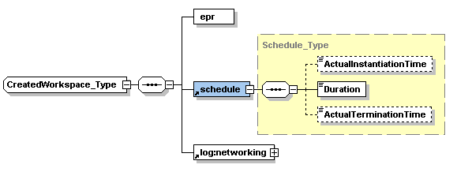

The factory service allows a client to instantiate a workspace as a WSRF resource by using the create operation with workspace metadata and a deployment request. The factory service's WSDL can be viewed online. It references a separate types schema.
You may send optional parameters alongside the metadata and deployment request in the create operation.
In the case of a group request, the factory returns a group EPR. It always returns at least one single workspace reference element (CreatedWorkspace_Type). In the case of a group request, this is a list of references (see the interfaces page for an overview of group requests).
In the following picture of a single workspace reference, note that the resource termination timestamp (ActualTerminationTime) represents something different than the running duration added to the instantiation timestamp (which is the shutdown time), there is an offset. The shutdown time is when you can't run the workspace anymore but it still might be unpropagating etc. During this time the workspace representation (WSRF resource) still exists even though running the VM is not possible anymore.

Currently the factory service has five resource properties: the maximum workspace running duration, the default running duration, the supported CPU architecture, the supported VMM version(s) if that is necessary to know, and the configured networking associations that can be requested (see the logistics section).
For notes on the current factory implementation, including fault descriptions, see the authorization explanation on the plugins page.
_NIMBUS_CENTER2_COLUMN_END _NIMBUS_FOOTER1 _NIMBUS_FOOTER2 _NIMBUS_FOOTER3